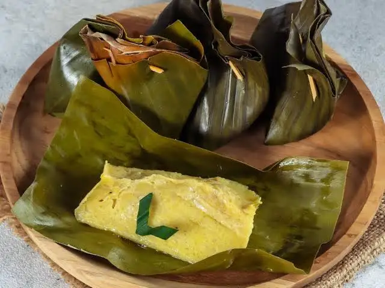
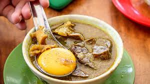
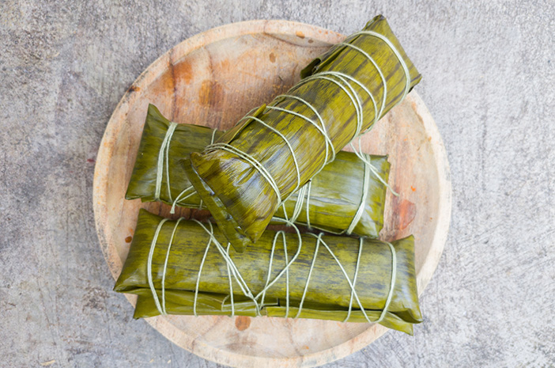
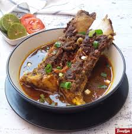

|

|
Waron Bugis hadir sebagai destinasi kuliner autentik yang menyajikan cita rasa khas Sulawesi Selatan dengan penuh kebanggaan dan kecintaan terhadap warisan budaya leluhur. Setiap hidangan kami diolah menggunakan rempah-rempah pilihan dan resep tradisional turun-temurun yang telah terjaga keasliannya selama bertahun-tahun. Kami menyediakan berbagai pilihan menu mulai dari makanan berat, minuman segar, hingga dessert manis khas Bugis-Makassar yang siap memanjakan selera Anda. Kebersihan dan kualitas bahan baku menjadi prioritas utama kami agar setiap suapan memberikan pengalaman kuliner yang tak terlupakan bagi setiap pelanggan. Segera kunjungi Waron Bugis dan rasakan sendiri kehangatan cita rasa "To Ugi" yang sesungguhnya, karena kami hadir untuk membawa kampung halaman lebih dekat ke hati Anda.
Menu Kami
Makanan |
Minuman |
Dessert |
|||
|---|---|---|---|---|---|
 |
Nasu Palekko adalah masakan tradisional khas suku Bugis, Sulawesi Selatan, yang berbahan dasar daging bebek atau itik yang dipotong kecil-kecil dan dimasak dengan bumbu rempah yang kaya. Masakan ini dikenal dengan cita rasanya yang pedas, gurih, dan sedikit asam karena menggunakan campuran cabai, serai, jahe, kunyit, dan asam jawa yang dimasak hampir tanpa air hingga bumbu meresap sempurna ke dalam daging. |  |
Sarabba adalah minuman tradisional hangat khas Makassar yang terbuat dari jahe, gula merah, santan, dan kuning telur. Minuman ini dipercaya dapat menghangatkan tubuh, meningkatkan stamina, dan cocok diminum di malam hari. |  |
Barongko adalah kue tradisional khas Bugis-Makassar yang terbuat dari pisang yang dihaluskan, telur, santan, dan gula, kemudian dibungkus daun pisang dan dikukus. Kue ini memiliki tekstur sangat lembut, lumer di mulut, dengan rasa manis dan gurih. |
 |
Coto Makassar adalah sup tradisional ikonik dari Sulawesi Selatan berbahan dasar daging dan jeroan sapi, dikenal dengan kuah kental gurih berbumbu rempah kuat dan tambahan kacang tanah sangrai halus. Biasanya disajikan panas dengan ketupat atau buras, sambal tauco, dan perasan jeruk nipis. |  |
Es Markisa adalah minuman khas Sulawesi Selatan yang terbuat dari sari buah markisa asli yang dicampur dengan air, gula, dan es batu. Rasanya segar, manis, dan sedikit asam sehingga sangat menyegarkan terutama saat cuaca panas. |  |
Pallu Butung adalah dessert khas Makassar berupa pisang rebus yang disajikan dengan kuah santan manis, biji selasih, dan es serut. Rasanya manis, gurih, dan sangat segar sehingga cocok dinikmati sebagai penutup makanan. |
 |
Pallubasa adalah hidangan sup daging tradisional yang berasal dari Makassar, Sulawesi Selatan. Kuliner legendaris ini berbahan dasar daging sapi atau kerbau termasuk jeroan yang dimasak perlahan dengan berbagai rempah-rempah dalam waktu lama. |  |
Teh Talua adalah minuman teh khas yang dicampur dengan telur ayam kampung yang dikocok bersama gula hingga berbusa, kemudian disiram teh panas. Minuman ini dikenal sebagai minuman penambah energi dan stamina. |  |
Lappa Lappa adalah kue tradisional khas Bugis yang terbuat dari beras ketan berisi kelapa parut dan gula merah, kemudian dibungkus daun pisang dan dipanggang. Rasanya manis, gurih, dan harum dengan aroma khas daun pisang yang menggoda. |
 |
Buras atau burasa adalah makanan tradisional khas masyarakat Bugis dan Makassar di Sulawesi Selatan, berbentuk mirip lontong namun lebih pipih dan gemuk. Buras terbuat dari beras yang dimasak dengan santan dan garam, dibungkus daun pisang, diikat, kemudian direbus hingga matang. |  |
Es Kelapa Muda adalah minuman segar yang terbuat dari air kelapa muda asli yang dicampur dengan es batu dan sedikit gula. Minuman ini menyegarkan, alami, dan kaya manfaat untuk kesehatan tubuh. | Cucuru adalah kue tradisional khas Bugis-Makassar yang terbuat dari tepung beras, gula merah, dan kelapa parut yang dipadukan hingga membentuk kue padat bercita rasa manis dan gurih. Kue ini sering hadir dalam berbagai acara adat dan perayaan sebagai sajian istimewa. | |
 |
Konro adalah sup iga sapi khas Makassar yang dimasak dengan kuah hitam pekat dari kluwak dan berbagai rempah pilihan. Dagingnya yang empuk dan kuahnya yang kaya rempah membuat Konro menjadi salah satu kuliner paling ikonik dari Sulawesi Selatan. |  |
Es Pisang Ijo adalah minuman khas Makassar berupa pisang yang dibalut adonan tepung berwarna hijau dari pandan, disajikan dengan bubur sumsum, sirup merah, dan es serut. Rasanya manis, segar, dan sangat cocok dinikmati di hari panas. |  |
Onde Onde Bugis adalah kue tradisional berbentuk bola ketan yang diisi dengan gula merah cair di dalamnya, kemudian dibalur dengan kelapa parut segar. Saat digigit, gula merah yang lumer di dalam memberikan sensasi manis yang khas dan tak terlupakan. |
Rekomendasi Kami
| No | Nama Menu | Kategori | Alasan Direkomendasikan |
|---|---|---|---|
| 1 | Coto Makassar | Makanan | Menu paling ikonik dan legendaris khas Sulawesi Selatan, wajib dicoba! |
| 2 | Konro | Makanan | Sup iga sapi dengan kuah rempah kaya, pilihan terbaik untuk pecinta daging. |
| 3 | Es Pisang Ijo | Minuman | Minuman segar khas Makassar yang paling populer dan digemari semua kalangan. |
| 4 | Barongko | Dessert | Kue tradisional lembut berbahan pisang, teksturnya unik dan rasanya autentik. |
Rincian Harga
Makanan |
Minuman |
Dessert |
|---|---|---|
|
|
|
Lokasi & Jam Operasional
Alamat
Jl. Contoh ji, Parepare, Sulawesi Selatan, Indonesia
Jam Operasional Kami
| Hari | Jam Buka | Jam Tutup |
|---|---|---|
| Senin - Jumat | 08.00 WITA | 22.00 WITA |
| Sabtu - Minggu | 07.00 WITA | 23.00 WITA |
Form Pesanan Waron Bugis
Kontak & Media Sosial
Hubungi Kami
- WhatsApp : 0812-3456-7890
- Telepon : (241) 011-077
- Email : waronbugis@email.com
Media Sosial
- Instagram : @waronbugis
- Facebook : Waron Bugis Official
- TikTok : @waronbugis
Layanan Pesan Antar
- Minimal Order : Rp. 30.000
- Area Pengiriman : Kota Parepare dan sekitarnya
- Pesan via WhatsApp : 0812-3456-7890